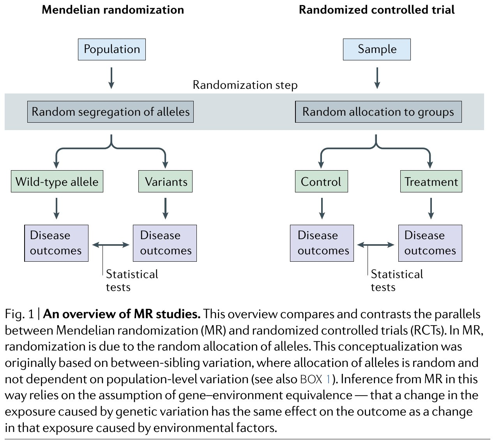
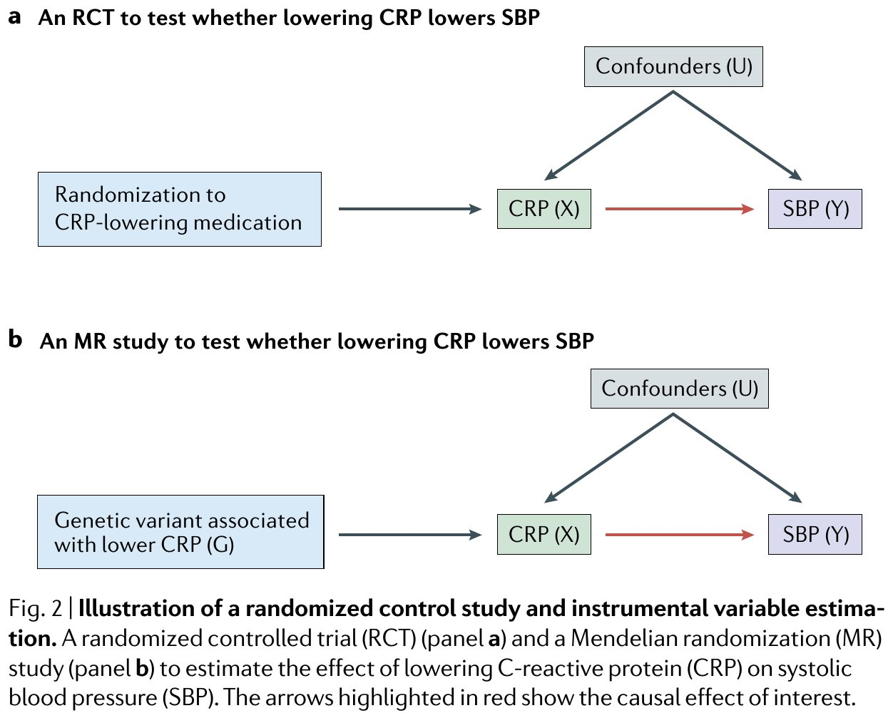
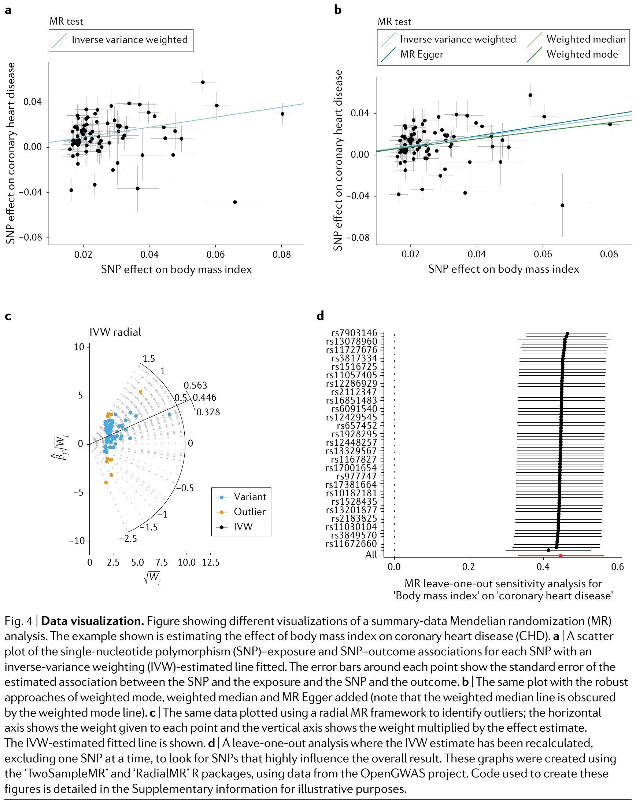
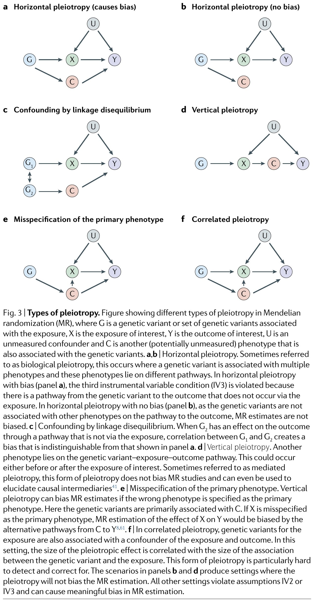
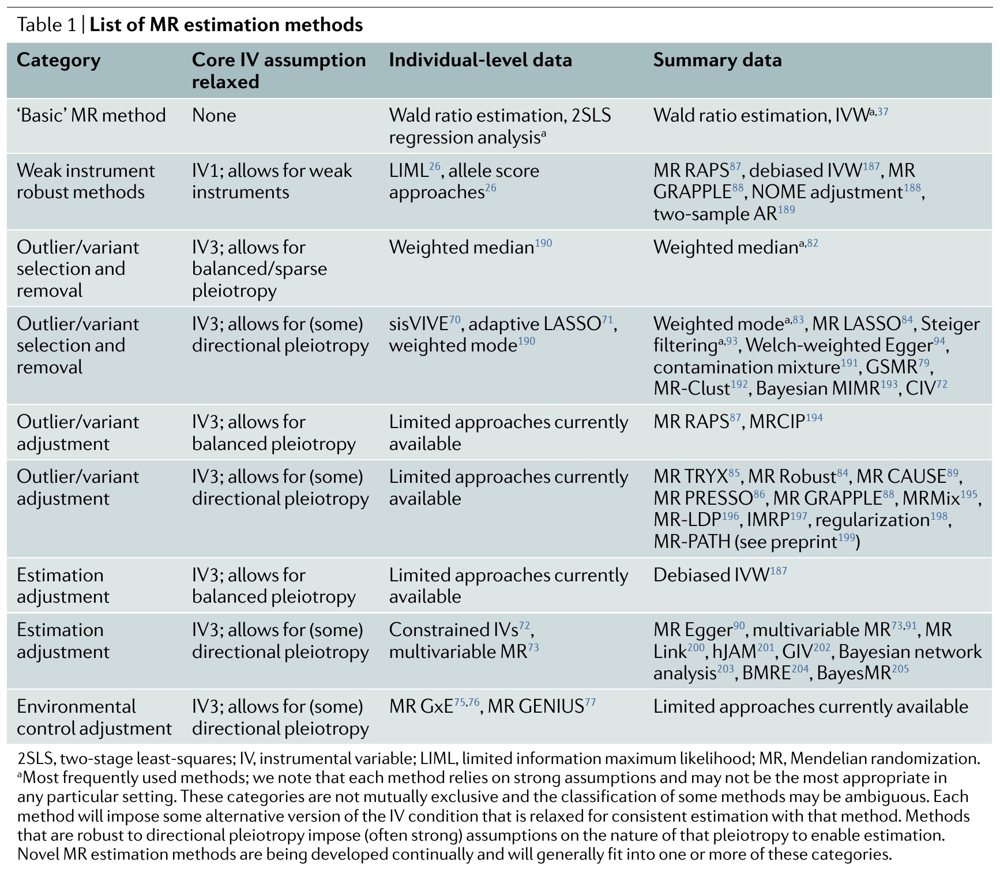
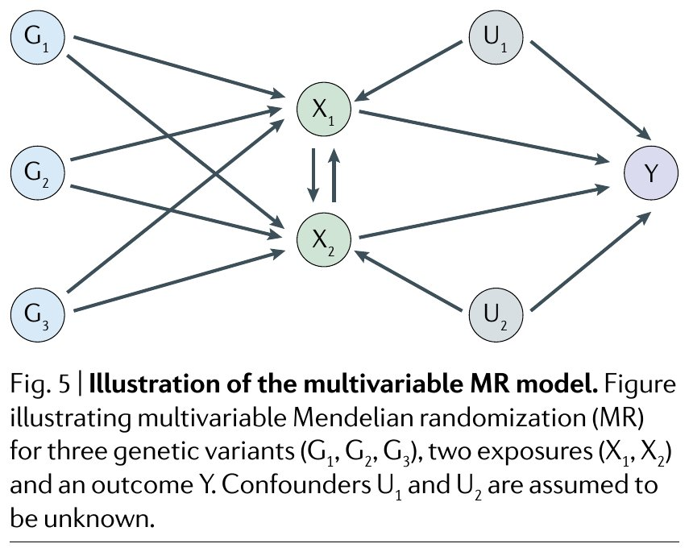
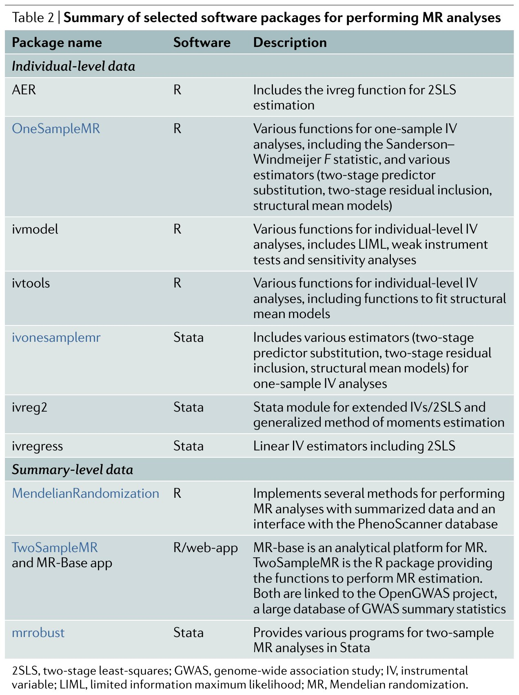
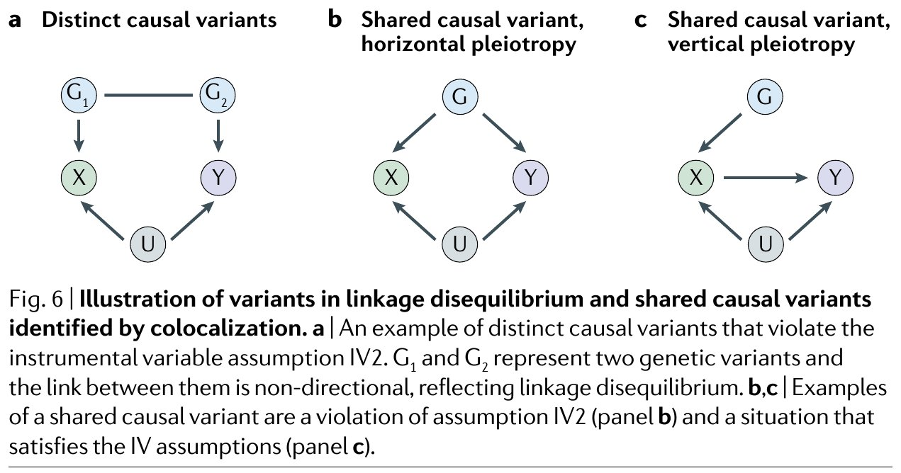

在医学和公共卫生研究中，我们常常想知道"X是否导致Y"——例如，高BMI是否导致冠心病？饮酒是否导致高血压？传统观察性研究容易受到混杂因素（confounders）的干扰（例如，运动习惯会同时影响BMI和冠心病风险）。随机对照试验（RCT）是因果推断的金标准，但很多问题无法用RCT回答——我们无法随机分配人们去"变胖"或"喝酒"。
孟德尔随机化（Mendelian Randomization, MR）提供了一条巧妙的"捷径"：将遗传变异当作自然界的随机分配。因为你的基因型在你出生前就已确定，且在人群中近似随机分配，遗传变异可以作为"工具变量"（Instrumental Variable, IV）来估计暴露对结局的因果效应，而不受传统混杂因素干扰。
📖 原文出处：阅读导引| 符号 | 含义 |
|---|---|
| $G$ 或 $G_l$ | 遗传变异（基因工具变量，通常为SNP）；$l$ 索引第 $l$ 个变异 |
| $X$ | 暴露（exposure），即可改变的风险因素（如BMI、CRP水平） |
| $Y$ | 结局（outcome），即健康结果（如冠心病、血压） |
| $U$ | 未观测混杂因素（unobserved confounder） |
| $\beta$ | 暴露对结局的因果效应（核心估计目标） |
| $\Gamma_l$ | SNP $l$ 对暴露的效应（基因-暴露关联） |
| $\gamma_l$ | SNP $l$ 对结局的效应（基因-结局关联） |
| $\alpha_l$ | SNP $l$ 对结局的直接效应（多效性效应，pleiotropic effect） |
| $\hat{\beta}_{IVW}$ | 逆方差加权（IVW）估计量 |
| $L$ | 用作工具变量的遗传变异总数 |
想象你想知道"喝咖啡是否导致肺癌"。你收集数据发现：喝咖啡多的人肺癌发病率更高。但这里有一个巨大的陷阱——喝咖啡多的人可能也更爱抽烟（抽烟是咖啡和肺癌的共同原因，即混杂因素）。如果你没有测量吸烟这个变量，你观察到的"咖啡→肺癌"关联其实是虚假的。
这就是观察性研究的根本困境：你永远无法确定是否遗漏了某个重要的混杂变量。
📖 原文出处：阅读导引随机对照试验（RCT）通过随机分组来解决这个问题：既然分组是随机的，那么混杂因素在两组间的分布应该是均匀的。但RCT代价高昂，且有些暴露无法随机分配（如BMI、饮酒），有些甚至涉及伦理问题（如让一组人吸烟）。
MR的基本洞察来自孟德尔第一和第二遗传定律（Box 1）：
通俗地说，一个人"抽到了"某个与高BMI相关的基因变体，这在很大程度上是随机的（不受后天行为、社会经济地位等因素影响）。因此，比较携带不同基因变体的人群的平均结局差异，近似于比较RCT中随机分配的治疗组和对照组。
📖 原文出处：阅读导引原论文 Figure 1 的完整总览图如下，可对照上文类比逐块阅读：

原论文 Figure 1：MR 研究总览。图左为 MR 列、右为 RCT 列，逐行平行对照两种设计的对应环节。第一行：MR 在"总体"（Population）层面比较，对应 RCT 在"样本"（Sample）层面比较；第二行（Randomization step）：MR 中减数分裂时等位基因的随机分离对应 RCT 中随机分配到各组——这是两种设计"去混杂"的共同核心；第三行：MR 比较携带"野生型等位基因 vs 变异"的个体，对应 RCT 的"对照组 vs 治疗组"；第四行：比较各组疾病结局（Disease outcomes）；第五行：以统计检验（Statistical tests）比较组间结局差异。图注进一步指出：这一平行关系源自孟德尔定律（尤其是同胞间等位基因的随机分配，见原文 Box 1），并依赖"基因-环境等价"假设——基因改变暴露对结局的影响，与后天环境因素改变暴露的影响相同。
图源：Sanderson et al., Nature Reviews Methods Primers (2022)。
假设你想知道C反应蛋白（CRP，一种炎症标志物）是否导致血压升高。一个RCT的做法是：随机给一些人服用降CRP药物（治疗组），给另一些人安慰剂（对照组），然后比较两组的血压。MR的做法是：找一个已知影响CRP水平的基因变体（如CRP基因中的SNP），然后比较携带不同等位基因的人的平均血压。
两者的逻辑结构完全相同（如图2所示）：
原论文 Figure 2 的对照示意图如下——RCT 与 MR 的因果结构几乎逐节点对应：

原论文 Figure 2：随机对照研究与工具变量估计的示意。两个面板以同一个科学问题——"降低 CRP 是否降低收缩压 SBP"——为例，红色箭头即研究者关心的因果效应。(a) RCT：随机化至降 CRP 药物组使"分组"独立于混杂 $U$，从而可以估计 CRP($X$) 对 SBP($Y$) 的效应。(b) MR：以"与较低 CRP 相关的遗传变异 $G$"替代随机分组——$G$ 在减数分裂时近似随机分配，同样独立于 $U$，因此可用工具变量法估计 $X \to Y$ 的效应。两图结构同构，唯一差别在于"随机化的来源"：人为掷硬币（RCT）与等位基因的随机分离（MR）。
图源：Sanderson et al., Nature Reviews Methods Primers (2022)。
在RCT中，最简单的分析是比较两组的结果均值（Intention-to-Treat, ITT）：
$$\Delta_1 = \mathbb{E}[\text{SBP} \mid G=1] - \mathbb{E}[\text{SBP} \mid G=0] \quad \text{(式1)}$$但ITT分析只能告诉你"分组是否影响了结局"（即是否有因果效应），而不能告诉你"效应有多大"。要估计效应量，还需要考虑随机分组对暴露本身的影响程度——这就是工具变量分析的作用。
假设一个 RCT 检验"多吃蔬菜对降低收缩压（SBP）"的效果。我们将 1000 名参与者随机分为两组：
6 个月后测量结果：
| 指标 | 干预组 (Z=1, n=500) | 对照组 (Z=0, n=500) | 差值 (Δ) |
|---|---|---|---|
| 实际蔬菜摄入增量（暴露 X） | +150 g/天 | +10 g/天 | 140 g/天 |
| 收缩压降幅（结局 Y） | -6.0 mmHg | -0.4 mmHg | -5.6 mmHg |
现在来看两种分析的区别：
🔹 ITT 分析（比较结局均值）
回答的问题是："随机分配到干预组，对血压有影响吗？"
ΔITT = SBP干预组 - SBP对照组 = -5.6 mmHg
⚠ ITT 只能告诉你"分组确实能降压"，但 -5.6 mmHg 这个数字不是你关心的——你关心的不是"被分配到多吃蔬菜"的效应，而是"每多吃 1g 蔬菜本身"的效应。
🔹 IV 分析（Wald Ratio — 除以上游效应）
回答的问题是："每多吃 1g 蔬菜，能降多少血压？"
βIV = ΔY / ΔX = (-5.6 mmHg) / (140 g/天) = -0.04 mmHg / (g/天)
✓ 这就是蔬菜摄入对血压的因果效应大小——每多摄入 1g 蔬菜/天，收缩压降低 0.04 mmHg。如果你想通过蔬菜摄入将血压降低 5 mmHg，大约需要每天增加 125g 蔬菜摄入。
为什么 IV 能给出效应量而 ITT 不能？关键在于 IV 做了"尺度换算"——用分组对暴露的影响力（分母）来"校准"分组对结局的影响力（分子）。这就好比你知道"用一把有刻度的量杯倒了水，水位上升了 2 厘米"，但如果不除以"量杯上 1 毫升对应多少厘米"，你就不知道到底倒了多少水——你只知道"倒了水确实能让水位上升"。
将这个逻辑迁移到 MR：基因型 G 就是"随机分组 Z"的天然代理——一个 SNP 让你多吃蔬菜（影响暴露），另一个 SNP 没有这个效应，但两者在其他方面完全可比（因为从出生时就随机分配了）。这就是为什么 MR 被称为"自然随机对照试验"。
📖 原文出处：阅读导引工具变量分析的简化形式是将"分组对结局的效应"除以"分组对暴露的效应"：
分子是基因对结局的效应，分母是基因对暴露的效应。这个比值就是暴露对结局的因果效应估计。直觉：如果携带某个等位基因的人平均CRP低2个单位、血压低4 mmHg，那么每降低1单位CRP，血压降低约2 mmHg。
📖 原文出处：阅读导引不是随便找一个基因变异就能当工具变量的。它必须满足三个条件，就好比一个合格的"裁判"必须满足：(1) 与比赛有关系；(2) 不偏袒任何一方；(3) 只通过规则影响比赛结果。
📖 原文出处：阅读导引IV1（相关性 Relevance）：遗传变异 $G$ 必须与暴露 $X$ 相关联。即 $G \not\perp X$。
IV2（独立性 Independence）：遗传变异 $G$ 必须与暴露-结局的混杂因素 $U$ 无关。即 $G \perp U$。
IV3（排他性 Exclusion Restriction）：遗传变异 $G$ 对结局 $Y$ 的影响完全通过暴露 $X$ 传递，没有其他通路。即 $G \perp Y \mid X, U$。
📖 原文出处：阅读导引以"CRP基因变异→CRP水平→血压"为例：
前三个条件可以检验"是否存在因果效应"（零假设检验），但不足以得到效应的具体数值。这就像一个秤能告诉你"这个苹果比那个重"，但如果不校准砝码，给不出"重多少克"。第四个条件就是"校准砝码"。
📖 原文出处：阅读导引论文Box 3描述了四种最常用的点估计识别条件，它们对因果效应的解释有细微差异：
| 条件名称 | 核心内容 | 效应解释 |
|---|---|---|
| 同质性（Homogeneity） | 因果效应在所有个体中相同 | 平均因果效应 = 个体因果效应 |
| 单调性（Monotonicity） | 遗传变异对所有个体的暴露影响方向一致 | 估计的是"依从者平均因果效应"（LATE） |
| 无效应修饰（No Effect Modification） | 遗传变异不与效应修饰因子相关 | 估计的是暴露对结局的平均效应 |
| 无多效性（No Pleiotropy） | 遗传变异对结局无直接效应（$\alpha_l = 0$） | IV估计量收敛于真实因果参数 |
MR隐含假定了通过遗传变异降低CRP与通过药物降低CRP对血压的效果相同。但基因变异从胚胎期就开始发挥作用，而药物治疗可能始于成年期。如果CRP在发育关键期的影响与成年期的影响不同，这一假设可能不成立。这就是"基因-环境等效性"（gene-environment equivalence）问题。
📖 原文出处：阅读导引MR分析的数据有两种形态：(1) 个体水平数据——每个参与者都有基因型、暴露和结局的个体记录；(2) 汇总水平数据——只有每个SNP与暴露/结局的关联统计量（$\beta$系数和标准误）。两者使用的估计方法不同，但逻辑相通。
汇总水平数据更常见，因为GWAS的汇总结果是公开发布的，研究者无需获取原始个体数据即可进行MR分析。
📖 原文出处：阅读导引第一阶段：将暴露 $X$ 对工具变量 $G$（和协变量）回归，得到 $X$ 的预测值 $\hat{X}$：
$$X = \pi_0 + \pi_1 G + \varepsilon$$第二阶段：将结局 $Y$ 对 $\hat{X}$ 回归，得到因果效应估计 $\beta$：
$$Y = \beta_0 + \beta \hat{X} + \nu$$$\beta$ 就是暴露对结局的因果效应。第一阶段确保只使用 $G$ 带来的暴露变异（外生部分），第二阶段估计该"净化后"的暴露对结局的影响。
📖 原文出处：阅读导引2SLS本质上是在做一件事：分离出暴露中"干净"的部分。暴露的变异有两个来源——遗传（外生，干净）和环境/行为（内生，可能混杂）。第一阶段回归将暴露投影到遗传空间上，得到"仅由基因解释的暴露变异"$\hat{X}$；第二阶段只需要用$\hat{X}$去预测结局，就自动排除了混杂因素对暴露的影响。
📖 原文出处：阅读导引实际应用中，单个SNP通常只能解释暴露变异的很小部分（如一个SNP可能只解释BMI变异的0.02%），导致"弱工具"问题。使用多个SNP作为工具变量可以提升统计效力。第一阶段的回归变为：
$$X = \pi_0 + \sum_{l=1}^{L} \pi_l G_l + \varepsilon$$然后第二阶段的 $\hat{X}$ 是一个等位基因得分（allele score）——即多个SNP对暴露影响的加权和。
📖 原文出处：阅读导引当遗传变异与暴露的关联很弱时（即IV1条件勉强满足），2SLS估计会偏向OLS估计（即偏向混杂的观察性关联），且置信区间可能过窄。判断标准：第一阶段回归的 $F$ 统计量 < 10 通常被视为弱工具的警示信号。
解决方法：使用有限信息最大似然（LIML）、等位基因得分法或稳健调整后的IVW方法。
📖 原文出处：阅读导引汇总水平MR的输入是：对于每个遗传变异 $l$，从GWAS中获得其对暴露的效应估计 $\hat{\Gamma}_l$（及标准误 $\sigma_{X,l}^2$）和对结局的效应估计 $\hat{\gamma}_l$（及标准误 $\sigma_{Y,l}^2$）。你不需要看到任何一个人的个体数据，只需要这些"基因→暴露"和"基因→结局"的汇总关联统计量。
📖 原文出处：阅读导引每个遗传变异 $l$ 给出一个Wald Ratio：$\hat{\beta}_l = \frac{\hat{\gamma}_l}{\hat{\Gamma}_l}$。IVW估计量是这些单独估计的精度加权平均：
$$\hat{\beta}_{IVW} = \frac{\sum_{l=1}^{L} \hat{\Gamma}_l \hat{\gamma}_l \sigma_{Y,l}^{-2}}{\sum_{l=1}^{L} \hat{\Gamma}_l^2 \sigma_{Y,l}^{-2}}$$等价于将 $\hat{\gamma}_l$ 对 $\hat{\Gamma}_l$ 回归（截距固定为零），权重为 $1/\sigma_{Y,l}^2$：
$$\hat{\gamma}_l = \beta_{IVW} \hat{\Gamma}_l + u_l, \quad u_l \sim N(0, 1), \quad \text{权重: } 1/\sigma_{Y,l}^2$$ 📖 原文出处：阅读导引想象每个SNP是一个独立的"微型研究"，各自通过Wald Ratio给出一个因果效应估计。IVW就是把这些"微型研究"的结果进行荟萃分析——给精度高（标准误小）的SNP更大的权重，给精度低的SNP更小的权重。由于所有SNP估计的是同一个因果效应（在无多效性的假设下），这个加权平均就是最优的汇总估计。
📖 原文出处：阅读导引论文图4展示了BMI对冠心病的MR分析。散点图中每个点代表一个SNP：横坐标是SNP对BMI的效应（$\hat{\Gamma}_l$），纵坐标是SNP对冠心病的效应（$\hat{\gamma}_l$）。IVW拟合的直线斜率就是因果效应估计。如果所有SNP都是有效工具（无多效性），这些点应该随机散布在直线周围——偏离直线的点可能是多效性的信号。
📖 原文出处：阅读导引论文介绍了三种互补的可视化策略来评估MR分析的可靠性：
原论文 Figure 4 的四种可视化原图如下（示例数据为 BMI → 冠心病的真实汇总 MR 分析）：

原论文 Figure 4：数据可视化。四面板展示同一项汇总数据 MR 分析（BMI → 冠心病）。(a) 传统散点图：每个点是一个 SNP，横轴为该 SNP 对 BMI 的效应、纵轴为对冠心病的效应，误差棒为标准误；IVW 拟合线（Inverse variance weighted）的斜率即因果效应估计。(b) 加入稳健方法的散点图：在 (a) 基础上叠加 MR-Egger、加权中位数、加权众数三条拟合线（加权中位数线被加权众数线遮挡）。注意横轴量程 0.02–0.08 远小于纵轴量程 −0.08–0.04——工具对暴露的效应远大于暴露对结局的效应，这是 MR 的典型形态。(c) 径向 MR 图：横轴为每个 SNP 的权重 $W_j$，纵轴为权重乘以效应估计 $\hat{\beta}_j W_j$；偏离 IVW 参考线的点（图例 Outlier）即离群变异，比散点图更容易识别。(d) 留一法敏感性分析：按 rsID 逐行列出每次移除一个 SNP 后重新估计的 IVW（点 + 置信区间），"All" 行是全部变异的总估计；若剔除某 SNP 后估计大幅移动，说明该 SNP 对整体结果影响过大。原图用 TwoSampleMR 与 RadialMR 两个 R 包绘制。
图源：Sanderson et al., Nature Reviews Methods Primers (2022)。
多效性是一个基因影响多个性状的现象。就像一把钥匙可能打开多把锁——一个SNP可能不仅影响你的BMI，还直接影响你的血脂水平。在MR中，多效性是IV3（排他性限制）被违反的主要原因。
但并非所有多效性都是坏事——关键区分在于多效性的"类型"。
📖 原文出处：阅读导引| 类型 | 机制 | 是否导致偏倚？ |
|---|---|---|
| (a) 水平多效性 Horizontal pleiotropy |
$G$ 通过非 $X$ 的通路影响 $Y$ | 是 — 违反IV3 |
| (b) 无偏水平多效性 | $G$ 影响的其他性状不在因果通路中 | 否 — 不影响MR估计 |
| (c) LD混杂 | $G_1$（工具）与 $G_2$（有水平多效性）处于LD | 是 — 与(a)不可区分 |
| (d) 垂直多效性 Vertical pleiotropy |
$G \to X \to M \to Y$，中介在因果通路上 | 否 — 是因果机制的一部分 |
| (e) 主表型误指定 | $G$ 主要影响 $C$ 而非 $X$，但 $X$ 被误认为主表型 | 是 — 偏倚由 $C \to Y$ 产生 |
| (f) 相关多效性 Correlated pleiotropy |
$G$ 的多效性效应大小与 $G \to X$ 的效应大小相关 | 是 — 极难检测 |
原论文 Figure 3 的六类型示意图如下，可与上表逐行对照：

原论文 Figure 3：多效性的类型。六个面板中 $G$（或 $G_1$、$G_2$）为遗传变异，$X$ 为暴露，$Y$ 为结局，$U$ 为未观测混杂，$C$ 为与 $G$ 关联的另一（可能未观测的）表型。(a) 水平多效性（造成偏倚）：$G$ 有经由非 $X$ 的通路影响 $Y$，违反 IV3。(b) 水平多效性（无偏倚）：$G$ 虽影响其他表型 $C$，但 $C$ 不在通向 $Y$ 的因果通路上，MR 估计不受污染。(c) LD 混杂：$G_2$ 有水平多效性，$G_1$ 与 $G_2$ 处于 LD，产生的偏倚与 (a) 不可区分。(d) 垂直多效性：表型 $C$ 位于 $G \to X \to Y$ 通路之上（即中介），不偏倚 MR，还可用于阐明因果中介。(e) 主表型误指定：变异实际主要影响 $C$，若误把 $X$ 定为主表型，$C \to Y$ 的替代通路会污染估计。(f) 相关多效性：多效性效应的大小与 $G \to X$ 效应的大小相关，最难检测与校正。总规则：(b)(d) 两类不造成偏倚，其余四类均违反 IV2 或 IV3。
图源：Sanderson et al., Nature Reviews Methods Primers (2022)。
由于多效性普遍存在，研究者开发了大量"多效性稳健"的MR方法。这些方法可以归为三大类：离群值移除（把"坏"SNP扔掉）、离群值调整（降低"坏"SNP的权重）、全盘调整（假设所有SNP都有多效性但施加某种结构约束）。
📖 原文出处：阅读导引原论文 Table 1 的完整方法目录原表如下——按"所放松的核心 IV 假设"分类，分个体水平与汇总水平两列，下文方法 A/B/C 即从此表归类而来：

原论文 Table 1：MR 估计方法目录。表格第一列是方法类别（基础 MR 方法、弱工具稳健方法、离群值/变异选择与移除、离群值/变异调整、估计量调整、环境控制调整），第二列标明该类放松的核心 IV 假设（如"IV1；允许弱工具""IV3；允许平衡/稀疏多效性"），第三、四列分别列出个体水平数据与汇总水平数据可用的具体方法（最常用者以上标 a 标注：Wald ratio、2SLS、IVW、加权中位数、加权众数等）。表末脚注提醒：各类别并不互斥，每种方法都会对多效性的结构施加某种替代假设——没有任何方法对全部多效性稳健，这正是需要联合多种方法做敏感性分析的原因。
图源：Sanderson et al., Nature Reviews Methods Primers (2022)。
| 方法 | 核心思想 | 假设 |
|---|---|---|
| 加权中位数 Weighted median |
取所有SNP Wald ratio的加权中位数，而非加权均值 | 至少50%的权重来自有效IV |
| 加权众数 Weighted mode |
取Wald ratio分布的众数（最多SNP支持的效应值） | 最大的一组一致SNP是有效的（ZEMPA假设） |
| MR LASSO | 用LASSO惩罚回归识别并剔除离群SNP | 多效性是稀疏的（只有少数SNP有偏） |
假设有10个SNP，其中7个是有效IV（一致估计BMI→冠心病效应为0.15），3个有严重多效性（给出-0.05、0.40、-0.30的奇怪估计）。IVW取均值会被这三个"坏"SNP拉偏，但加权中位数只看排序后位于50%位置的估计值——只要"坏"SNP不超过50%，中位数仍然接近0.15。这就是"多数决"的原则。
📖 原文出处：阅读导引| 方法 | 核心思想 |
|---|---|
| MR PRESSO | 检测并移除离群SNP后重新估计，通过残差平方和检验离群值 |
| MR RAPS | 使用稳健损失函数降低离群SNP对估计的影响 |
| MR GRAPPLE | 同时估计因果效应和每个SNP的多效性效应，用profile likelihood选择"干净"SNP |
| MR CAUSE | 区分"相关多效性"和"不相关多效性"，通过贝叶斯模型比较来推断是否存在因果效应 |
将 $\hat{\gamma}_l$ 对 $\hat{\Gamma}_l$ 回归时不强制截距为零：
$$\hat{\gamma}_l = \beta_{0E} + \beta_{1E} \hat{\Gamma}_l + \varepsilon_l, \quad \text{权重: } 1/\sigma_{Y,l}^2$$截距 $\beta_{0E}$ 估计平均多效性效应，斜率 $\beta_{1E}$ 给出校正多效性后的因果效应。其核心假设是InSIDE假设（Instrument Strength Independent of Direct Effect）：SNP对暴露的效应强度与其多效性效应大小无关。
📖 原文出处：阅读导引MR-Egger的致命弱点是InSIDE假设在相关多效性（Fig. 3f）下被违反。如果SNP对暴露的效应越强，其多效性效应也越大，那么MR-Egger的估计也会有偏。更糟糕的是，MR-Egger通常统计效力远低于IVW，导致置信区间非常宽。
📖 原文出处：阅读导引当多效性通路通过已知的中间表型起作用时，可以将这些表型也纳入模型：
$$\hat{\gamma}_l = \beta_{X} \hat{\Gamma}_{X,l} + \beta_{C_1} \hat{\Gamma}_{C_1,l} + \beta_{C_2} \hat{\Gamma}_{C_2,l} + \varepsilon_l$$其中 $\hat{\Gamma}_{C_1,l}$ 和 $\hat{\Gamma}_{C_2,l}$ 是SNP对已知多效性表型的效应。这样就显式建模了多效性通路，而非将其归入误差项。
📖 原文出处：阅读导引原论文 Figure 5 的 MVMR 模型示意图如下，可直观对照上文的回归公式阅读：

原论文 Figure 5：多变量 MR（MVMR）模型示意图。图中为三个遗传变异 $G_1$、$G_2$、$G_3$、两个暴露 $X_1$、$X_2$ 与一个结局 $Y$ 的因果结构；$U_1$、$U_2$ 是假定未知的混杂。与单变量 MR 只有一个"暴露"不同，MVMR 同时把 $X_1$、$X_2$ 放进模型，估计的是每个暴露控制其他暴露之后的直接因果效应——只要变异的额外通路经过已知表型，其效应就被显式吸收，不再污染目标暴露的估计（这正是上文公式中同时纳入 $\hat{\Gamma}_{X,l}$ 与 $\hat{\Gamma}_{C,l}$ 的含义）。
图源：Sanderson et al., Nature Reviews Methods Primers (2022)。
双样本MR（two-sample MR）的流行得益于GWAS汇总统计数据的公开可用。研究者可以从不同的GWAS中提取暴露和结局的汇总数据，而无需拥有一份同时包含暴露、结局和基因型的大型个体水平数据集。这极大地降低了MR分析的门槛。
📖 原文出处：阅读导引| 资源 | 描述 |
|---|---|
| OpenGWAS / MR-Base | 最大的GWAS汇总数据平台，包含数千个性状的GWAS结果，可通过API直接提取用于MR分析 |
| UK Biobank | 50万人队列，包含丰富表型和基因型数据，是许多GWAS的数据来源 |
| FinnGen | 芬兰人群的大规模生物银行-GWAS项目 |
| GWAS Catalog | NHGRI-EBI维护的GWAS关联目录 |
| 软件/包 | 用途 |
|---|---|
| TwoSampleMR (R) | 双样本MR分析的完整工作流：数据提取、协调、分析、可视化 |
| RadialMR (R) | 径向MR可视化与离群值检测 |
| MendelianRandomization (R) | 多种MR估计方法的R包（IVW, MR-Egger, 加权中位数/众数等） |
| MR-PRESSO (R) | 离群值检测与校正 |
| MVMR (R) | 多变量MR分析 |
上表是常用工具的简化清单——原论文 Table 2 的完整软件目录原表如下（按个体水平数据与汇总水平数据两大板块编排，附各包的平台与功能说明）：

原论文 Table 2：执行 MR 分析的精选软件包汇总。表格分两大板块：个体水平数据（Individual-level data）列出 AER（R，2SLS 的 ivreg 函数）、OneSampleMR（R，含 Sanderson–Windmeijer $F$ 统计量）、ivmodel、ivtools、ivonesamplemr（Stata）、ivreg2（Stata）、ivregress（Stata）等；汇总水平数据（Summary-level data）列出 MendelianRandomization（R，可对接 PhenoScanner 数据库）、TwoSampleMR 与 MR-Base 应用（R/网页，对接 OpenGWAS 项目）、mrrobust（Stata）等。结合 6.1 的数据平台可以看出"数据（OpenGWAS）→ 方法（各 R/Stata 包）→ 可视化（RadialMR 等）"的完整工具链。
图源：Sanderson et al., Nature Reviews Methods Primers (2022)。
不同GWAS可能使用不同的效应等位基因（effect allele）编码。在合并暴露和结局的汇总数据之前，必须确保：(1) 效应等位基因一致；(2) 效应方向与同一等位基因对齐；(3) 对于回文SNP（palindromic SNPs，如A/T和C/G），需额外验证链方向。这一步的错误是最常见的MR分析失败原因之一。
📖 原文出处：阅读导引MR的应用远远超出了"X是否导致Y"的简单问答。论文总结了五大应用场景，从药物靶点验证到因果机制的三角验证。
📖 原文出处：阅读导引| 应用类型 | 核心问题 | 典型案例 |
|---|---|---|
| 1. 因果效应验证 | 可改变暴露是否因果性地影响健康结局？ | BMI → 冠心病；酒精摄入 → 心血管病 |
| 2. 药物靶点验证 | 调节某个基因/蛋白靶点是否会影响疾病风险？ | PCSK9基因变异 → LDL-C降低 → 冠心病风险降低（验证了PCSK9抑制剂靶点） |
| 3. 因果中介分析 | 暴露通过哪些中间通路影响结局？ | 教育 → 收入/生活方式 → 心血管健康（多变量MR拆解中介效应） |
| DANDELION 中介式 DPG 定位 | GWAS 位点通过哪些中介基因影响疾病？ | Salamone et al. (2026)：GWAS 位点(X) → 候选 DPG(M) → 哮喘(Y)，用 DACT 中介检验而非估计效应 |
| 4. 双向MR | X导致Y，还是Y导致X？ | BMI ↔ 抑郁症（双向分析确定因果方向） |
| 5. 三角验证（Triangulation） | 多种因果推断方法的结论是否一致？ | MR + 传统观察性研究 + RCT + 准实验设计的多元证据整合 |
三角验证的核心理念是：不同研究方法有不同的偏倚来源，如果这些方法对同一问题给出相似答案，那么这个答案很可能反映了真实的因果效应。
MR的独特价值在于：其偏倚来源（多效性、弱工具、人群分层）与常规观察性研究（混杂、反向因果、测量误差）几乎正交。当MR和调整充分的观察性研究指向同一方向时，结论的可信度大幅提升。
📖 原文出处：阅读导引PCSK9基因的功能缺失变异导致LDL胆固醇终生低水平，携带者冠心病风险显著降低。这一MR发现预测了PCSK9抑制剂药物的成功——后续RCT证实PCSK9抑制剂确实降低了心血管事件。这是MR在药物开发中"先于RCT验证靶点"的经典案例。
📖 原文出处：阅读导引尽管MR的设计天然规避了传统混杂偏倚，但它引入了一系列独特的偏倚来源。理解这些偏倚对于负责任地解读MR结果至关重要。
📖 原文出处：阅读导引| 偏倚来源 | 机制 | 当前解决方案 |
|---|---|---|
| 1. 弱工具偏倚 (Weak instrument bias) |
遗传变异与暴露的关联太弱，估计向混杂的观察性关联偏倚 | LIML；allele scores；F>10筛选；debiased IVW |
| 2. 水平多效性 (Horizontal pleiotropy) |
遗传变异通过非暴露通路影响结局 | 第5节的方法套件（加权中位数/众数、MR-Egger、MR-PRESSO等） |
| 3. 人群分层 (Population stratification) |
基因频率因祖先背景而异，祖先背景又与结局相关 | 在种族同质人群中进行GWAS；GWAS中校正主成分；家庭内MR |
| 4. 选型交配 (Assortative mating) |
伴侣选择基于可遗传性状，导致遗传关联被扭曲 | 家庭内MR设计；选型交配对多基因性状的MR偏倚呈中等程度 |
| 5. 生存偏倚/选择偏倚 (Survival/Collider bias) |
遗传变异影响谁存活/参与研究，从而扭曲基因-结局关联 | 使用多个独立队列；敏感性分析；逆概率加权 |
| 6. 传递比失真 (Transmission ratio distortion) |
等位基因从父母到后代的传递偏离50:50预期 | 使用亲代-子代三人组数据验证 |
想象你在一个健身房里做调查，问"体重和收入有没有关系？"你发现健身房里体重轻的人收入高。但这能说明"体重轻导致收入高"吗？不能——因为"进健身房"本身就是一个 collider（碰撞节点）：它同时受体重（想减肥的人进健身房）和收入（有钱人才办得起卡）的影响。你条件化在"在健身房里"这一状态上，就人为地在体重和收入之间制造了统计关联。
在 MR 中，"参与研究"就是这个"健身房"——它不是随机的，而是由遗传、健康、社会经济地位、地理位置等多种因素共同决定的。当你只分析研究参与者时，就等价于条件化在一个 collider 上。
📖 原文出处：阅读导引令 $S$ 为"入选研究"的二值指示变量（$S=1$ 表示参与）。当以下条件同时满足时，选择偏倚发生：
在数学上，即便 $G \perp U$ 在人群中成立，在 $S=1$ 子集中 $G \not\perp U \mid S=1$，从而 $\hat{\beta}_{IV} \ne \beta$。
📖 原文出处：阅读导引| 子类型 | 机制 | 典型例子 | 偏倚方向 |
|---|---|---|---|
| 1. 生存偏倚 (Survivorship / Neyman bias) |
高遗传风险的个体在达到研究年龄前死亡，导致病例组中低风险个体富集 | APOE-ε4 携带者（高阿尔茨海默风险）在 70+ 岁队列中系统性缺失 → ε4 对认知衰退的效应被低估 | 通常向零偏倚（效应被低估） |
| 2. 健康志愿者偏倚 (Healthy volunteer bias) |
参与生物银行的个体更健康、受教育程度更高、更富有；若 G 与参与倾向相关则产生偏倚 | UK Biobank 参与率仅 ~5.5%；携带"高教育多基因得分"的个体参与概率更高 → 教育相关 MR 的 G-X 和 G-Y 关联均可能被扭曲 | 方向不可预测（取决于 G 与参与倾向的关系） |
| 3. 指标事件偏倚 (Index event bias) |
研究疾病进展时，所有被试都"已有首次发病"——条件化在 index event 上引入了 collider | 研究卒中复发 → 所有被试都"已经卒中过一次"；首次卒中的发生同时受 G 和其他风险因子（U）影响 → 条件化在"首次卒中"上诱导 G 与 U 的虚假关联 | 方向不可预测；可能产生虚假保护效应 |
假设一个与冠心病强相关的 SNP（效应等位基因频率 30%），研究目标是 SBP → 冠心病：
| 一般人群（50岁） | 研究样本（60-75岁，幸存者） | |
|---|---|---|
| SNP 效应等位基因频率 | 30% | 22%（28%的携带者已死于冠心病，未入组） |
| SNP → SBP 关联（Γ̂） | β = 1.2 mmHg/等位基因 | β = 1.0（衰减，因为幸存者中 G→SBP 通路被选择性削弱） |
| SNP → 冠心病 关联（γ̂） | OR = 1.15 | OR = 1.05（向零偏倚，因为"高遗传风险+存活"的是特殊人群） |
| Wald Ratio | 真实的 β | 同时受 Γ̂ 和 γ̂ 的双重扭曲 → 偏倚不可预测 |
注意：这里不仅是 γ̂（SNP→结局）有偏——Γ̂（SNP→暴露）也可能有偏，因为存活状态同时与 SBP 和 SNP 相关。两条通路同时受 collider 影响，使得MR 的分子和分母都不可靠。
📖 原文出处：阅读导引弱工具偏倚（偏倚1）的方向是确定的——总是向观察性关联偏倚。但 collider bias 的方向和量级均不可预测：它可能夸大、缩小甚至逆转因果效应。这意味着：
| 方法 | 原理 | 局限性 |
|---|---|---|
| 多队列交叉验证 | 在不同年龄结构、地域、招募策略的独立队列中复现；若效应一致则 collider bias 可能性低 | 如果所有队列都有相似的参与偏倚（如都来自生物银行），交叉验证无法排除 |
| 逆概率加权（IPW） | 用参与概率模型（logistic 回归：年龄、性别、SES、健康状况 → 参与与否）构造权重，使加权样本更接近目标人群 | 依赖"参与概率模型正确指定"的假设；需要非参与者的外部信息（通常不可得） |
| Heckman 选择模型 | 显式建模两个方程——选择方程（什么决定了参与）和结局方程（暴露对结局的效应）——用两阶段法联合估计 | 需要有效的"排除限制"（至少一个变量只影响选择而不影响结局），实践中很难找到 |
| Manski 边界分析 | 不用点估计，而用非参部分识别方法推导效应的可能范围（最坏/最好情形） | 边界通常太宽以至于无信息量 |
| 家庭内 MR | 在兄弟姐妹内部比较而非人群层面——兄弟姐妹的出生队列、家庭环境等天然匹配，从机制上减少选择偏倚 | 需要家庭数据；统计效力低于人群层面 MR |
孟德尔第一定律断言：杂合子父母（基因型 Aa）的两个等位基因以恰好 50:50 的比例随机传递给子代。但在生物学现实中，这个比例可以偏离 50:50——就像一枚"不公平硬币"，某些等位基因以 >50% 的概率被传递。这就是传递比失真（TRD）。
TRD 对 MR 的杀伤力在于：它直接攻击了 MR 的逻辑根基。MR 把遗传变异当作"自然界的随机化"，但如果等位基因的传递本身不是随机的，那"随机化"的类比就从根本上崩溃了。
📖 原文出处：阅读导引对于一个杂合子亲代（基因型 Aa），子代获得等位基因 A 的概率 $p$ 偏离 0.5：
$$H_0: p = 0.5 \quad \text{vs} \quad H_1: p \neq 0.5$$TRD 的程度通常用传递比 $k = p/(1-p)$ 量化。$k=1$ 表示无失真；$k>1$ 表示 A 被优先传递；$k<1$ 表示 A 传递不足。
在人群层面，即使每个家庭内 TRD 的程度很小（如 $p=0.51$），经过多代累积后，等位基因频率也会显著偏离 Hardy-Weinberg 平衡的预期值。更关键的是，基因型与暴露/结局的关联也会被扭曲——因为人群中观察到的 G-X 关联不再纯粹反映 G 对 X 的因果效应，还掺杂了 TRD 带来的"非随机 G 分布"。
📖 原文出处：阅读导引| 机制 | 发生层面 | 典型例子 | TRD 强度 |
|---|---|---|---|
| 1. 减数分裂驱动 (Meiotic drive) |
配子形成（减数分裂）过程中 | 小鼠 t-单倍型（t-haplotype）：杂合子雄性以 >90% 概率传递 t 等位基因（而非正常的 50%）——是目前已知最强的 TRD 案例。人类中，某些着丝粒区域的 TRD 达 55:45 | 中等至强（k = 1.2–10⁺） |
| 2. 配子选择 (Gametic selection) |
受精前（精子/卵子竞争） | 若某个等位基因使精子游动更快或寿命更长，则该等位基因在受精池中过度出现；精子发生基因（如 DAZ 家族）的变异可能导致此类 TRD | 弱至中等（k = 1.02–1.3） |
| 3. 合子后选择 (Post-zygotic selection) |
受精后（胚胎存活/流产） | 纯合致死性变异：杂合子父母有 2/3（而非 1/2）存活子代携带正常等位基因（因为纯合子致死胚胎在观察到之前被淘汰）。发育关键基因（如 NOTCH1）的功能丧失变异常出现此现象 | 中等至极端（致死性变异 p ≈ 0.67 的"表观"传递率） |
假设一个 SNP 的效应等位基因（A）有 TRD：杂合子传递 A 的概率 $p=0.55$（而非 0.50）。在 MR 分析中：
关键洞察：TRD 并不直接违反 IV3（排他性限制）——它违反的是更深层的前提：基因型的随机分配。这比多效性更难通过敏感性分析修复，因为它攻击的是 MR 推理的根基而非某一特定假设。
📖 原文出处：阅读导引| 常见 SNP（MAF ≥ 1%） | 罕见变异（MAF < 1%） | |
|---|---|---|
| TRD 效应强度 | 通常非常弱（p ≈ 0.5001–0.505），在大样本中被对冲 | 可能较强——单个罕见变异的 TRD 不被大样本对冲（因为携带者太少） |
| 对 MR 的影响 | 在样本量 N > 10,000 时通常可忽略 | 更令人担忧——尤其是基于全基因组测序（WGS）的新型 MR 正越来越多使用罕见变异作为工具 |
| 检测难度 | 需要极大的三人组样本量才能检出 | 即使有三人组数据，也需要大量杂合子亲代才能检定（而罕见变异的杂合子本就稀少） |
随着全基因组测序的普及，越来越多的 MR 研究使用罕见功能丧失变异（如 PCSK9 的功能丧失突变）作为工具变量。这类变异的优势是效应量大、多效性低——但它们恰恰是 TRD 的高风险区：
| 方法 | 原理 | 局限性 |
|---|---|---|
| 亲代-子代三人组验证 | 在有 mother-father-child trio 的数据中，直接统计杂合子亲代的等位基因传递比例，做二项检验 H₀: p=0.5 | 需要三人组数据（昂贵且稀缺）；对弱 TRD 的检验效力不足 |
| 传递不平衡检验（TDT） | 比较"传递"vs"未传递"的等位基因频率——在存在关联和连锁的家庭数据中，TDT 对 TRD 和人群分层同时稳健 | 仅检验关联的存在性，不直接量化 TRD 对 MR 估计的偏倚量 |
| 家庭内 MR | 利用兄弟姐妹间（within-sibship）的遗传差异做 MR——兄弟姐妹共享相同的父母等位基因传递过程，因此 TRD 的影响在家庭内分析中被自然控制 | 需要家庭数据；效力低（因为 siblings 之间的遗传差异远小于人群间的差异） |
| HWE 偏离检测 | 在人群数据中检测基因型频率是否偏离 Hardy-Weinberg 平衡——严重的 TRD 会导致可检测的 HWE 偏离 | HWE 偏离也可能是基因分型错误、人群分层等原因；且弱 TRD 在 HWE 检验中不可检测 |
| 跨群体验证 | 在不同人群（如欧洲、东亚、非洲）中验证关联——若 TRD 是主因，不同人群的 TRD 程度应有差异（因为驱动 TRD 的机制常有群体特异性） | 间接；需要多人群 GWAS 数据 |
理想的双样本MR要求暴露GWAS和结局GWAS来自完全不重叠的样本。如果两者有重叠，IVW估计会向暴露-结局的观察性关联偏倚（类似弱工具偏倚的方向）。当重叠很大时，双样本MR方法收敛于单样本MR（有混杂偏倚）的结果。
解决方法：使用不重叠的GWAS；或在重叠存在时使用专门的方法校正。
📖 原文出处：阅读导引大多数MR方法假设暴露对结局的效应是线性的（或至少是单调的）。但如果真实关系是U型（如BMI与死亡率——过轻和过重都不好），线性MR可能给出接近零的估计，因为正面效应和负面效应相互抵消。非线性MR方法仍处于发展早期。
📖 原文出处：阅读导引原论文 Figure 6 完整原图如下——LD 中的相邻变异与共定位分析检出的"共享因果变异"，正是 IV2 假设与多效性偏倚在基因组物理结构层面的具体化，可与第 5 节 Fig. 3 的 LD 混杂（panel c）互相对照：

原论文 Figure 6：LD 中的变异与共定位识别的共享因果变异。三个面板中 $G_1$、$G_2$ 为两个遗传变异，$X$、$Y$ 为暴露与结局，$U$ 为未观测混杂。(a) 不同的因果变异（违反 IV2）：$G_1$ 与 $G_2$ 处于 LD（两者之间的无方向连线即 LD），$G_2$ 通过不经由 $X$ 的通路影响 $Y$，产生的偏倚与 Fig. 3a 的水平多效性无法区分——这正是单变异 MR 研究需要警惕的情形。(b) 共享因果变异 + 水平多效性（违反 IV2）：同一个变异 $G$ 既经由 $X$ 又经由水平通路影响 $Y$，共定位分析检出的"共享变异"在这里对应一个有偏的多效性工具。(c) 共享因果变异 + 垂直多效性（满足 IV 假设）：$G$ 只通过 $X \to Y$ 的通路影响结局，共定位检出的共享变异是真正干净的因果信号。含义：共定位本身不区分 (b) 与 (c)，需结合多效性稳健方法综合判断。
图源：Sanderson et al., Nature Reviews Methods Primers (2022)。
MR是当前发展最快的统计遗传学方法领域之一。论文从数据、方法、应用三个维度勾勒了未来方向。
📖 原文出处：阅读导引论文强调MR研究需要遵循STROBE-MR报告指南（STrengthening the Reporting of OBservational studies in Epidemiology using Mendelian Randomization），确保方法、假设检验和敏感性分析的完整透明报告。
📖 原文出处：阅读导引| 论文章节 | 核心内容 | 本文对应章节 |
|---|---|---|
| Abstract | MR的定义、原理和范围 | Header |
| Introduction | MR的历史、动机、与RCT的类比 | 第1节 |
| Experimentation | IV条件（Box 1-4）；MR与RCT的DAG对比 | 第1-2节 |
| Results — Data | 个体水平与汇总水平数据的特征与获取 | 第3节、第6节 |
| Results — Individual-level estimation | Wald ratio、2SLS、LIML、allele score | 第3节 |
| Results — Summary-level estimation | IVW、多效性稳健方法（Table 1）、可视化 | 第4-5节 |
| Applications | 药物靶点、三角验证、双向MR等 | 第7节 |
| Limitations and optimizations | 六大偏倚来源和解决方案 | 第8节 |
| Outlook | 方法学前沿、开放科学 | 第9节 |
本解读按照"动机→原理→方法→应用→局限→展望"的逻辑重组织了论文内容，将原文分布在多个章节的相关内容（如多效性在原文多处出现）整合到统一的专题中，更便于学习理解。
📖 原文出处：原文相关章节